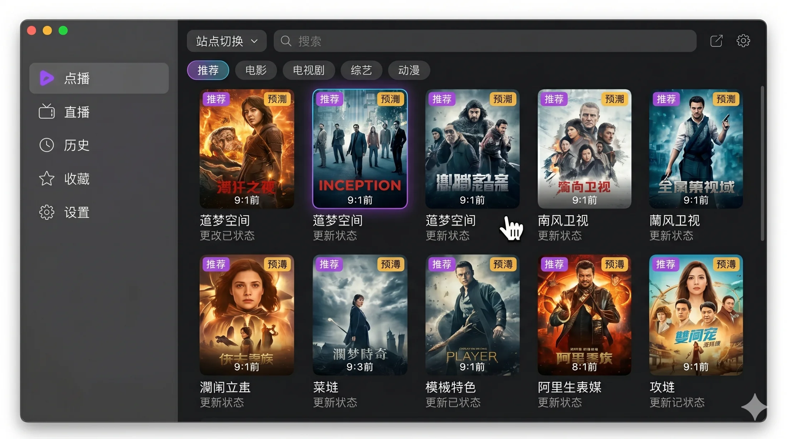
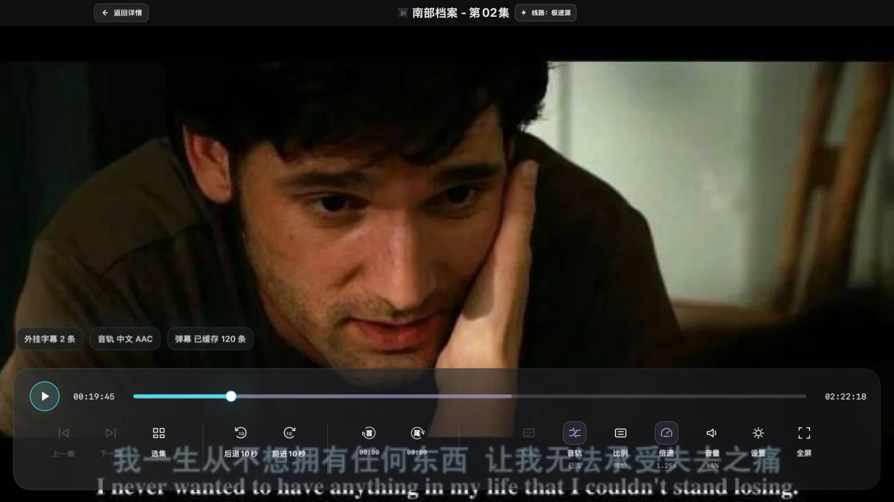
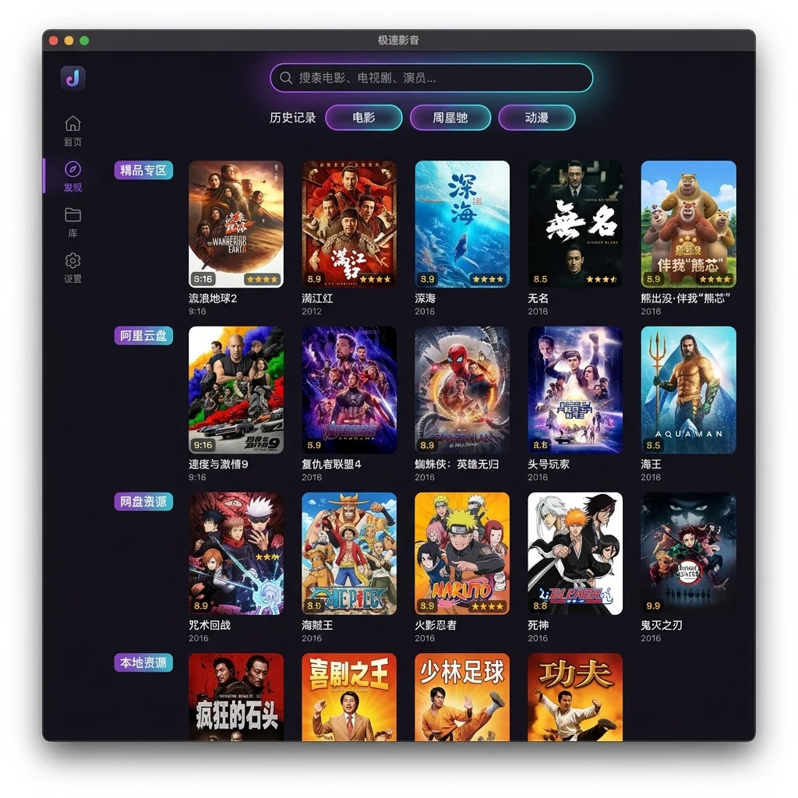

原生 macOS 媒体播放器
NetVplayer
你的内容，你的 Mac，你的播放方式
基于 SwiftUI 与内嵌 libmpv，为 Apple Silicon 打造。只连接你选择并有权访问的内容来源。
版本 1.0.0 · macOS 14+ · Apple Silicon

原生播放体验
画面归于内容，控制恰到好处。
SwiftUI 构建原生界面，libmpv 负责稳定播放。字幕、音轨、倍速与播放控制保持清晰直接，窗口状态可在下次打开时恢复。

- SwiftUI 原生界面系统级排版、焦点与窗口行为。
- 内嵌 libmpv成熟播放核心，不依赖外部播放器进程。
- 状态自然延续分别恢复点播与直播窗口的位置和尺寸。
用户自有内容
你的媒体入口，由你决定。
公开应用不内置视频目录、直播列表、站点 Provider、账号或默认源地址。添加你自己的兼容配置、WebDAV、AList/OpenList 或受支持云盘，构建属于自己的媒体空间。

NetVplayer 提供播放与连接能力；内容来源、访问权限和服务账号始终由用户自行管理。
安全扩展
每一次安装，都经过完整验证链。
扩展包只从固定 HTTPS 索引获取。下载、兼容性判断与启动之间设置多重校验，让未经授权或不符合声明的内容更难进入运行环境。
- 01固定 HTTPS 索引只读取预设安全入口
- 02索引签名确认发布清单未被替换
- 03归档哈希核对下载内容完整性
- 04Manifest 签名验证扩展声明来源
- 05兼容性检查协议、App、macOS 与架构
- 06资源与沙盒核对声明资源并隔离启动
- 07吊销状态阻止已撤销版本继续运行
隐私边界
NetVplayer 不提供公共账号体系，也不要求使用预置媒体服务。你选择连接什么、使用什么凭据、访问哪些内容，由你自行决定并承担相应权限责任。
开放构建
看得见的代码，参与得了的未来。
NetVplayer 以 MIT License 开源，使用 SwiftUI 构建 macOS 原生体验，并将 libmpv 集成到应用内部。你可以阅读实现、提交问题、讨论改进或贡献代码。
- 界面
- SwiftUI
- 播放核心
- libmpv
- 系统要求
- macOS 14+ · Apple Silicon
- 许可证
- MIT License